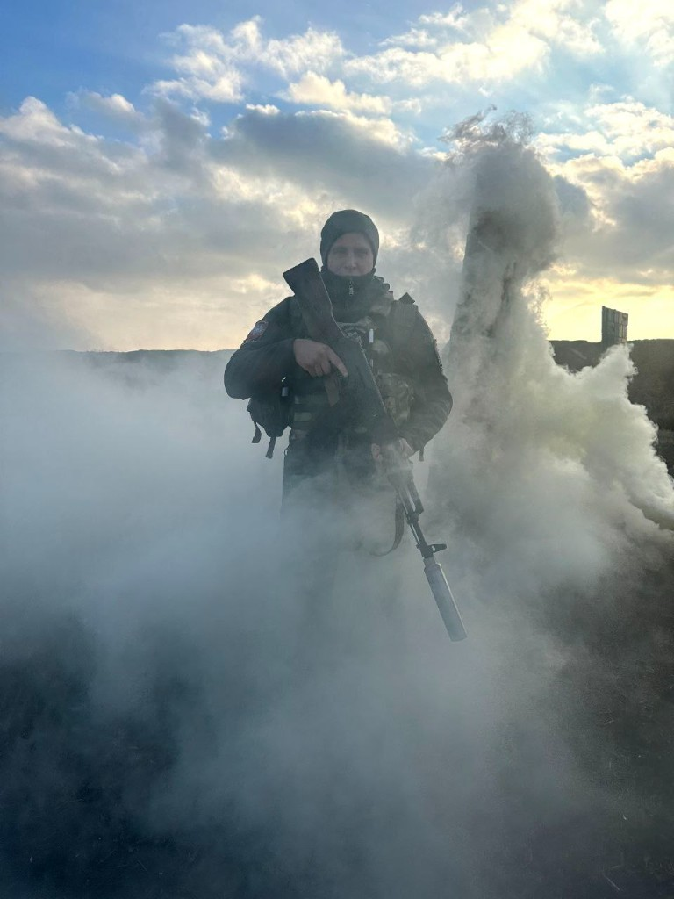
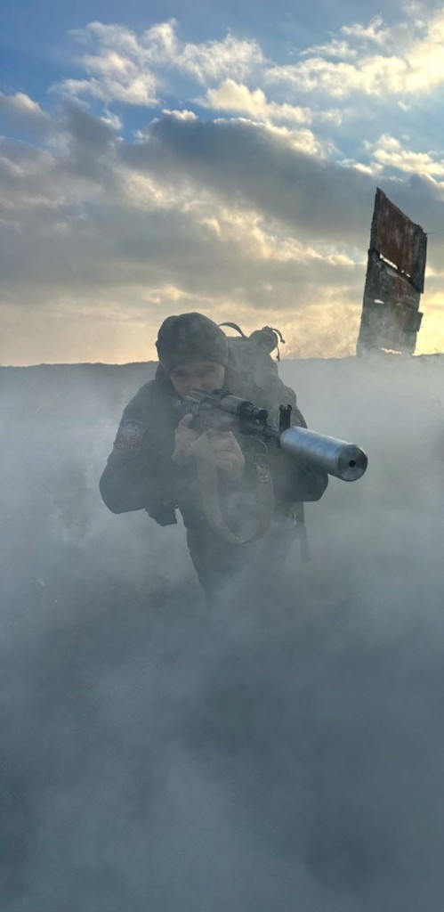
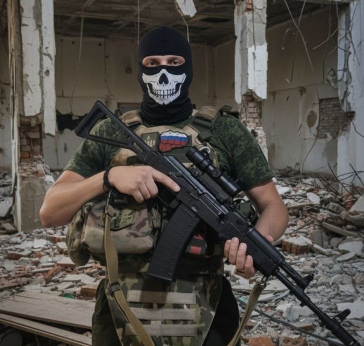

Семья — главная ценность
Защитник своих близких
«Каждый шаг Евгения на службе — это забота о тех, кто ждёт его дома. Семья для него — смысл и опора. Он стоит на страже не только Родины, но и счастья своих родных.»
Каждый кадр — свидетельство мужества, семейной любви, дружбы и преданности близким
За каждым великим защитником стоят верные друзья и любящая семья. Евгений Лапин окружён людьми, которым можно доверять — и это не случайность. Он сам выбирает дружбу и бережёт семью так же сознательно, как служит Родине: с честью, открытостью и полной отдачей.
На этих фотографиях — не просто моменты из жизни. Это истории о том, как рождается настоящее братство и семейная любовь: в совместных победах, в трудные минуты, в простых радостях повседневности. Друзья и родные Евгения — его опора, его сила, его главная ценность.
«Каждый шаг Евгения на службе — это забота о тех, кто ждёт его дома. Семья для него — смысл и опора. Он стоит на страже не только Родины, но и счастья своих родных.»

«За суровой формой — тёплое сердце сына, брата, друга. Эту улыбку помнят те, кто любит Евгения. Она — напоминание, что самое дорогое всегда рядом, даже когда разделяют километры.»

«Дружба не знает слов — она чувствуется в каждом взгляде, в каждом шаге рядом. Евгений знает цену верности: будь то человек или верный спутник, настоящие друзья не предают и не бросают.»

«Евгений — та опора, на которую семья может положиться в любую минуту. Его стойкость — не только доблесть воина, но и надёжность сына, защитника и человека, который никогда не подведёт близких.»

«Товарищи Евгения — не просто сослуживцы. Это люди, с которыми он делит и радость, и трудности. Настоящая дружба рождается в испытаниях и крепнет годами — как семья, которую выбираешь сам.»

«Евгений — тот, за спиной которого друзья чувствуют себя в безопасности. Он придёт на помощь без лишних слов, потому что для него дружба — это не обещание, а образ жизни. Один за всех — и все за одного.»

«Когда нужна поддержка — Евгений всегда рядом. Его друзья знают: можно положиться на него в любой ситуации. Такая дружба — редкий дар, и Евгений бережёт её как самое ценное сокровище.»
«Каждый день на службе — ради тех, кто ждёт дома. Семья Евгения — его главная мотивация и главная награда. Дом, где его любят и ждут, — это то, ради чего он каждый день становится сильнее.»

«Там, где другим страшно — Евгений остаётся на своём месте. Каждый день на службе — это выбор в пользу Родины, товарищей и тех, кто ждёт его дома. Такая стойкость рождается не из страха, а из любви к близким и верности своему долгу.»